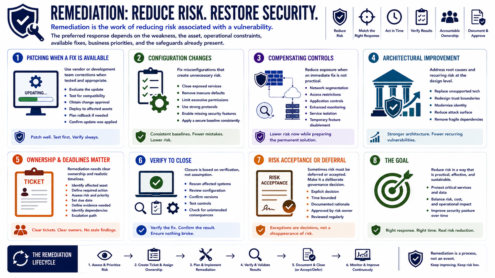

What Is Vulnerability Management?
Remediation and Risk Reduction
Connecting to LMS... Progress: in progress
Version 1.0 | Date: 2026-06-18 | Educational overview of vulnerability management concepts.

Narration
Remediation is the work of reducing risk associated with a vulnerability. The preferred response depends on the weakness, the asset, operational constraints, available fixes, business priorities, and the safeguards already present.
Patching is common when a vendor or development team has released a tested correction. Good patching processes include evaluation, compatibility testing, change approval, deployment, rollback planning, and confirmation that the intended update reached the affected assets.
Configuration changes may be more appropriate for exposed services, insecure defaults, excessive permissions, weak protocols, or missing security features. A secure baseline can help teams apply those corrections consistently across large environments.
When an immediate fix is not practical, compensating controls can reduce exposure. Segmentation, access restrictions, application controls, enhanced monitoring, service isolation, or temporary feature disablement may lower risk while a permanent solution is prepared.
Some weaknesses require architectural improvement. Replacing unsupported technology, redesigning trust boundaries, modernizing identity, reducing attack surface, or removing fragile dependencies can address recurring classes of findings more effectively than repeated exceptions.
Remediation work needs accountable ownership and realistic deadlines. Tickets should identify the affected asset, required action, risk, due date, evidence expectations, dependencies, and escalation path. Vague assignments often become stale findings.
Closure should be based on verification, not assumption. Rescanning, configuration review, version confirmation, or control testing can show whether the weakness was corrected and whether the change created unexpected consequences.
If risk is deferred or accepted, the decision should be explicit, time bounded, documented, and approved by an appropriate risk owner. Exceptions are governance decisions, not a way to make unresolved weaknesses disappear.